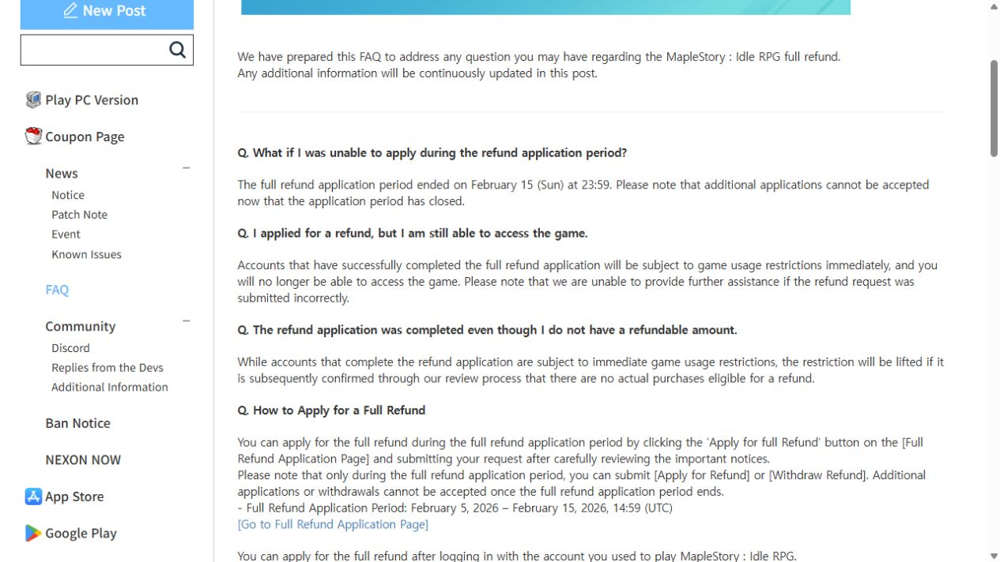

게임 운영
메이플 키우기 — 환불 이후의 미접속은 모두 유저 이탈일까?
2026년 전액 환불 공지·FAQ와 공개 반응을 바탕으로 안내·문의 처리·활동 해석의 기준을 정리한 모의 운영안입니다.

- 공식 정책
- 한국 FAQ는 환불 신청 완료 즉시 해당 게임 계정 이용 제한을 안내합니다.
- 공개 반응
- 댓글 15개를 검토해 9개를 포함했습니다. 같은 작성자의 답글을 포함하며 전체 여론이 아닙니다.
- 모의 대응
- 계정 영향·환불 대상·처리 상태를 먼저 확인하고 공지·FAQ·CS 답변을 맞춥니다. 지원자의 모의안입니다.
계정 제한에 따른 미접속을 자발적 이탈로 집계하면 안 됩니다. 환불 처리 완료만으로 신뢰 회복을 판단하지 않습니다.
01. 먼저 구분할 문제
환불 신청은 금전 처리와 계정 이용 조건에 함께 영향을 줍니다. 이용자에게는 신청 전 계정 영향을 정확히 설명하고, 운영 분석에서는 접속할 수 없는 계정과 접속 가능한 계정의 활동을 나눠 확인해야 합니다.
02. 확인한 근거와 자료의 범위
| 자료 | 확인한 내용 | 해석 한계 |
|---|---|---|
| 공식 환불 공지·한국 FAQ [S2·S3·S6] | 최초 공지는 환불 완료 후 제한, 이후 FAQ는 신청 완료 즉시 제한을 설명 | 정책 판본·예외·적용 시점 확인 필요. 실제 오안내 빈도 미확인 |
| 공개 댓글 15개 검토·9개 포함 [S4] | 오류 고지 불신, 계정 제한 이의, 시간·캐릭터·닉네임 연속성 우려와 긍정 반응 | 한 기사 댓글 표본. 같은 작성자의 답글 포함 |
| 회사 후속 실적 서한 [S9] | 회사는 3월 환불 완료를 설명 | 처리 완료와 이용자 신뢰 회복은 별도 확인 |
03. 근거에서 대응 기준으로
| 확인한 사실·제약 | 내린 판단 | 운영에서 할 일 |
|---|---|---|
| 초기 공지와 후속 FAQ에 제한 시점 표현 차이가 있음 | 한 문구만 보고 계정 영향을 확약하기 어려움 | 정책 책임자에게 적용 시점·철회·예외 확인 후 공지·FAQ·CS 기준 통일 |
| 공개 반응에 금전·계정 자산·신뢰 문제가 함께 있음 | 환불 찬반 하나로 문의를 묶으면 요청 내용을 놓칠 수 있음 | 이용자가 확인하려는 대상과 요구를 구분해 기록 |
| 정책상 접속 불가능한 계정이 생김 | 해당 계정의 미접속을 자발적 이탈로 집계하면 해석이 달라짐 | 전체 활동과 제한·접속 가능 상태별 수·활동을 함께 보고 |
04. 공개 반응에 적용한 모의 처리 판단
아래는 기존 댓글을 바탕으로 작성한 대응 검토안입니다. 실제 접수·응대 기록은 아닙니다.
| 공개 반응과 사례 ID | 답변 전 확인 | 처리 방향 |
|---|---|---|
| 환불과 계정 제한 결합에 이의 · V07 | 현재 적용 정책과 철회·예외 조건, 이용자가 확인하려는 내용 | 정책 근거를 설명하고 개별 예외는 담당자 확인 후 답변 |
| 투자한 시간·캐릭터·닉네임 연속성 우려 · V06·V09 | 계정 제한이 미치는 범위와 보존·복구 정책 | 금전 처리와 계정 자산 영향을 구분해 안내. 복구 가능 여부는 확인 전 약속하지 않음 |
| 오류 고지·대응에 대한 불신 · V02·V04·V05·V12 | 공식 확인된 오류·조치·후속 확인 일정 | 확인된 사실과 미확정 사항을 나눠 안내하고 같은 사유의 재문의 추적 |
처리 방향을 비교하기 위해 정책 이의·자산 우려·신뢰 문제를 골랐습니다. 전체 분류와 긍정 의견은 원본 CSV에 보존했습니다.
자료 확인과 긴급도 판단을 분리합니다. 진행 중인 피해나 거래·지급 오류가 확인되면 보호·처리 확인을 우선 요청하고, 정책 변경 요구는 근거와 영향 확인을 거쳐 전달합니다.
05. 처리 결과와 활동을 따로 확인
환불 발표(01.28)와 신청 개시(02.05)는 서로 다른 기준선이다. 환불 처리를 마친 것과 유저의 신뢰가 회복된 것도 다른 결과다.
| 질문 | 함께 확인할 자료 |
|---|---|
| 환불은 처리되고 있는가 | 유효 신청부터 마켓 취소 확인까지의 시간·미처리 잔량·실패/중복 거래 |
| 안내가 도움이 되었는가 | 동일 사유 재문의와 답변 불일치. 문의 감소만으로 만족·신뢰 회복을 확정하지 않음 |
| 미접속을 어떻게 볼 것인가 | 전체 DAU와 계정 상태별 수·비중·활동을 함께 확인. 제한 계정을 빼서 전체 감소를 숨기지 않음 |
실측 결과가 아닌 계획이다. 접속 가능한 미접속도 중단 위험 신호일 뿐 자발적 이탈 확정은 아니다. 코호트·기간·상태 전환·장애와 활동률 분모는 부록에서 정의했다.
06. 상세 기록
정책 비교, 모의 공지·FAQ·CS 초안, 거래 처리와 계정 상태별 측정 정의를 보존한 자료입니다.
상세 조사·실무 기록 ↗ · 계정 상태·분모 상세 정의 ↗ · 상세 조사 Markdown ↓ · 핵심 보고서 PDF ↓
출처와 한계
출처와 확인 한계
- S1 공식 넥슨 Q4 2025 실적 서한, 발행 2026.02.12, p.4: 인지일·환불 대상·당시 처리 예상. 원문 ↗
- S2 공식 한국 신청 공지, 2026.02.05 게시·현행 종료 표시. 국내 대상·기간·계정 조건. 원문 ↗
- S3 공식 한국 FAQ, 2026.02.03 게시·03.17 추가 표시. 10.26 현행 본문 확인, 한국(스카니아) 기준·전체 개정 이력 미확보. 원문 ↗
- S4 인벤 이두현 기자, 2026.02.02 14:20 보도. 사건 배경은 보도, VOC는 별도 댓글 원문. 원문 ↗
- S6 공식 한국 최초 환불 발표, 2026.01.28 19:00. 당시 표현은 현행 원문에서 확인. 원문 ↗
- S5 공식 ‘메키에 바란다’ 개발팀 답변, 현행 상태 10.24 열람. 각 답변의 최초 공개·수정 시각을 확정하지 않음. 원문 ↗
- S7 한국 공식 어빌리티 설명, 2026.01.26. 담당 부서 발견·수정과 경영진 인지를 구분. 원문 ↗
- S8 한국 공식 액션 프레임·공격속도 설명, 2026.01.25. 당시 수정 방향·보상 계획. 원문 ↗
- S9 공식 Q1 2026 실적 서한, 2026.05.14, p.9. 1분기 매출 영향 약 67억 엔·3월 환불 완료라는 회사 설명. 원문 ↗
- E2 보존: 영문 신청 공지·지역 비교용. 한국 정책의 주근거 아님. 원문 ↗
- E3 보존: 영문 FAQ·지역/버전 비교용. 한국 정책의 주근거 아님. 원문 ↗
- E6 보존: 영문 최초 환불 발표·지역 비교용. 원문 ↗
- S10 공식 오프라인 보상 FAQ. 현행 시간 한도를 과거 모든 이벤트에 적용하지 않음. 원문 ↗
VOC 수집 기준: VOC 수집 방법
자료 공백: 오류 최초 발생·개발 인지 시각의 전체 로그, 국내 정책 전체 개정 이력, 개별 거래별 환급액·처리 시간, 실제 DAU·잔존·CS 원장, 전체 여론·인과 효과. 이 자료 없이 대규모 이탈 또는 신뢰 회복을 확정하지 않는다. 과거 사건 데이터·개인 기록·출처는 삭제하지 않고 보존했다.
함께 작성한 게임 분석
재시작의 성장 부담을 기존 지원으로 줄일 수 있을까?
개인 재육성 경험, 성장 구조, 공식 이벤트의 참여 조건을 연결한 별도 분석입니다. 참여 대상 변경 모의안·화면 예시·검증 계획을 13장에 정리했습니다.

게임 분석서 웹으로 보기 ↗ · PDF 내려받기 · 13p
환불·CS 운영 대응과 구분되는 추가 결과물이며, 기존 이벤트의 목적이 잘못됐거나 제안 효과가 검증됐다는 뜻은 아닙니다.